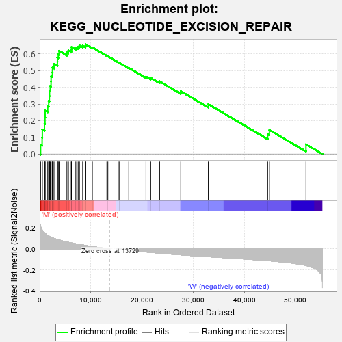
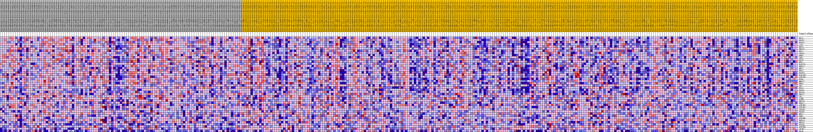
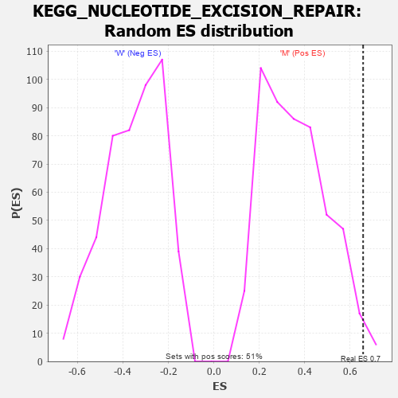

| Dataset | MUC16.MUC16.cls#M_versus_W.MUC16.cls#M_versus_W_repos |
| Phenotype | MUC16.cls#M_versus_W_repos |
| Upregulated in class | M |
| GeneSet | KEGG_NUCLEOTIDE_EXCISION_REPAIR |
| Enrichment Score (ES) | 0.65704864 |
| Normalized Enrichment Score (NES) | 1.8316479 |
| Nominal p-value | 0.013671875 |
| FDR q-value | 0.054565802 |
| FWER p-Value | 0.251 |

| PROBE | DESCRIPTION (from dataset) | GENE SYMBOL | GENE_TITLE | RANK IN GENE LIST | RANK METRIC SCORE | RUNNING ES | CORE ENRICHMENT | |
|---|---|---|---|---|---|---|---|---|
| 1 | RPA1 | na | 181 | 0.213 | 0.0550 | Yes | ||
| 2 | POLE2 | na | 480 | 0.181 | 0.0992 | Yes | ||
| 3 | POLD2 | na | 521 | 0.178 | 0.1472 | Yes | ||
| 4 | LIG1 | na | 937 | 0.153 | 0.1817 | Yes | ||
| 5 | RFC5 | na | 1039 | 0.148 | 0.2205 | Yes | ||
| 6 | ERCC8 | na | 1068 | 0.147 | 0.2604 | Yes | ||
| 7 | RPA2 | na | 1572 | 0.130 | 0.2868 | Yes | ||
| 8 | CUL4A | na | 1762 | 0.123 | 0.3172 | Yes | ||
| 9 | DDB1 | na | 1896 | 0.119 | 0.3474 | Yes | ||
| 10 | CDK7 | na | 1927 | 0.118 | 0.3793 | Yes | ||
| 11 | POLE | na | 2065 | 0.115 | 0.4083 | Yes | ||
| 12 | RFC1 | na | 2222 | 0.111 | 0.4359 | Yes | ||
| 13 | RAD23A | na | 2231 | 0.111 | 0.4662 | Yes | ||
| 14 | ERCC3 | na | 2496 | 0.106 | 0.4904 | Yes | ||
| 15 | RFC2 | na | 2513 | 0.105 | 0.5189 | Yes | ||
| 16 | RFC3 | na | 2803 | 0.100 | 0.5411 | Yes | ||
| 17 | POLE3 | na | 3467 | 0.089 | 0.5536 | Yes | ||
| 18 | RAD23B | na | 3472 | 0.089 | 0.5781 | Yes | ||
| 19 | GTF2H3 | na | 3639 | 0.087 | 0.5989 | Yes | ||
| 20 | PCNA | na | 3798 | 0.084 | 0.6192 | Yes | ||
| 21 | MNAT1 | na | 5330 | 0.066 | 0.6095 | Yes | ||
| 22 | RFC4 | na | 5619 | 0.062 | 0.6214 | Yes | ||
| 23 | XPC | na | 6167 | 0.057 | 0.6271 | Yes | ||
| 24 | RPA3 | na | 6214 | 0.057 | 0.6418 | Yes | ||
| 25 | POLD1 | na | 7067 | 0.048 | 0.6396 | Yes | ||
| 26 | POLD3 | na | 7521 | 0.045 | 0.6437 | Yes | ||
| 27 | ERCC2 | na | 7777 | 0.043 | 0.6509 | Yes | ||
| 28 | XPA | na | 8407 | 0.038 | 0.6498 | Yes | ||
| 29 | CCNH | na | 8949 | 0.033 | 0.6491 | Yes | ||
| 30 | ERCC6 | na | 9009 | 0.033 | 0.6570 | Yes | ||
| 31 | ERCC1 | na | 10297 | 0.022 | 0.6399 | No | ||
| 32 | GTF2H2 | na | 13138 | 0.004 | 0.5894 | No | ||
| 33 | GTF2H1 | na | 13331 | 0.002 | 0.5866 | No | ||
| 34 | CUL4B | na | 15332 | -0.001 | 0.5508 | No | ||
| 35 | POLE4 | na | 15533 | -0.002 | 0.5479 | No | ||
| 36 | RBX1 | na | 17422 | -0.013 | 0.5171 | No | ||
| 37 | DDB2 | na | 20780 | -0.029 | 0.4642 | No | ||
| 38 | GTF2H4 | na | 21704 | -0.033 | 0.4565 | No | ||
| 39 | ERCC4 | na | 23448 | -0.040 | 0.4359 | No | ||
| 40 | ERCC5 | na | 27584 | -0.056 | 0.3763 | No | ||
| 41 | POLD4 | na | 32971 | -0.073 | 0.2989 | No | ||
| 42 | GTF2H5 | na | 44565 | -0.112 | 0.1196 | No | ||
| 43 | CETN2 | na | 44909 | -0.113 | 0.1444 | No | ||
| 44 | RPA4 | na | 52056 | -0.157 | 0.0581 | No |

